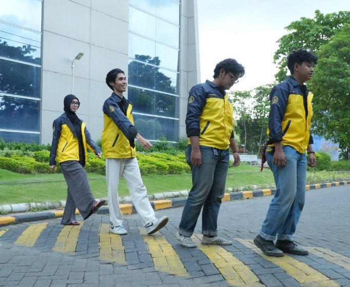
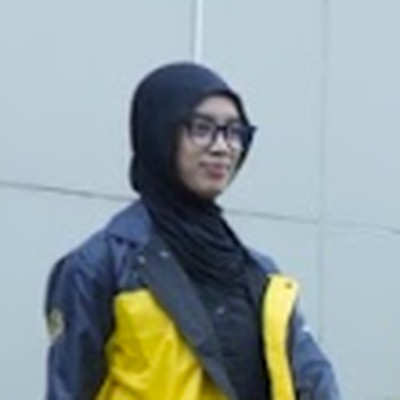

Biro Keorganisasian berfokus pada sistem, tata kelola organisasi, serta efektivitas struktur dan pelaksanaan program kerja dalam BEM FTEIC ITS (TKO Bab IV.h). Melalui integrasi lini masa program kerja, implementasi sistem pencapaian Objective & Key Results (OKR), supervisi berkala 3 tahap, serta evaluasi sistemik koordinasi antar-departemen, tim ini mewujudkan budaya kerja Structured Direction yang adaptif dan akuntabel.
Fungsionaris pengawal tata kelola, sinkronisasi lini masa, dan mutu program kerja berbasis OKR Kabinet Polaris 2026:

Kerangka kerja Objectives and Key Results (OKR) memastikan seluruh elemen BEM FTEIC bergerak dengan kompas terpadu, terukur, dan berdampak nyata bagi mahasiswa:
Menjadi pedoman navigasi strategis agar seluruh departemen dan biro memiliki pemahaman yang seragam mengenai arah besar yang ingin dicapai kabinet.
Mengubah evaluasi abstrak menjadi tolok ukur kuantitatif dan kualitatif yang objektif, transparan, dan dapat diverifikasi bersama secara berkala.
Membangun jembatan sinergi vertikal dan horizontal antara visi kabinet, sasaran departemen, dan implementasi teknis kepanitiaan di lapangan.
Menjamin setiap kegiatan tidak hanya sekadar gugur kewajiban atau selesai terlaksana, melainkan memberi dampak positif yang nyata bagi sivitas akademika.
OKR disusun secara berjenjang agar seluruh program organisasi memiliki orientasi dan garis komando pencapaian yang sama:
Penyelarasan bertingkat dari cita-cita luhur kabinet hingga aksi nyata panitia program kerja:
Arah strategis besar BEM FTEIC ITS Kabinet Pola Harmonis 2026 sebagai elevator mahasiswa dan pengawal mutu.
Target spesifik yang diturunkan ke masing-masing departemen dan biro sesuai ruang lingkup tugasnya.
Indikator capaian kuantitatif terukur dengan bobot penilaian terstandar pada setiap departemen.
Kegiatan, kepanitiaan, atau proyek nyata yang dirancang untuk mewujudkan Key Results tersebut.
Studi kasus riil perumusan Objective, Key Results, pembobotan nilai, serta inisiatif program pendukung dari dokumen Biro Keorganisasian:
Project Lens digunakan sebagai tools utama dalam organisasi untuk mengolah data, mengambil data monitoring, menyusun laporan progres, serta menjadi dasar evaluasi pencapaian OKR. Project Lens berperan sangat penting karena seluruh data yang masuk digunakan langsung sebagai bahan pengambilan keputusan organisasi.
Merekapitulasi input data ketercapaian target, persentase kehadiran, dan bobot evaluasi secara sistematis.
Mengambil telemetry perkembangan proker sebelum, saat pelaksanaan, dan sesudah kegiatan berlangsung.
Menyediakan ringkasan eksekutif bagi BPH dan stakeholder terkait status kesehatan jalannya roda organisasi.
Menjadi landasan obyektif dalam mengukur keberhasilan sasaran kabinet dan perbaikan berkelanjutan.
Pelaksanaan monitoring Project Lens dijalankan secara bergantian dan sinergis antara Biro Keorganisasian dan Biro Personalia sepanjang 2 Quartal kepengurusan:
Pengisian instrumen monitoring konsep awal dan target OKR program kerja tahap permulaan.
Pengawalan kesejahteraan fungsionaris, iklim kerja tim, dan evaluasi performa personal.
Audit capaian Key Results proker kuartal berjalan serta asistensi teknis panitia.
Pendampingan motivasi tengah periode, deteksi kejenuhan tim, dan rapor PA kuartal pertama.
Evaluasi adaptif penyesuaian target OKR semester kedua dan sinkronisasi lini masa lanjutan.
Penguatan koordinasi lintas departemen dan retensi keterlibatan fungsionaris.
Verifikasi ketuntasan pertanggungjawaban proker dan standarisasi arsip LPJ.
Kompilasi rapor akhir Performance Appraisal dan malam apresiasi purna kepengurusan.
Format lembar kerja resmi Google Spreadsheet yang digunakan fungsionaris dan kepala departemen untuk memetakan capaian Objective dan Key Results:
| DEPARTEMEN OBJECTIVE | BOBOT DO | KETERCAPAIAN DO | DEPARTEMENTALISASI | KEY RESULT | BOBOT KR | INDIKATOR KETERCAIPAN | KETERCAPAIAN | TARGET | HASIL | INITIATIVE |
|---|---|---|---|---|---|---|---|---|---|---|
| Pengurus mendapat lingkungan kerja yang harmonis | 0,16 | 0% | PERSONALIA | Terlaksananya program internalisasi nilai kekeluargaan dan harmoni organisasi | 0,40 | Jumlah kegiatan internalisasi | 0% | 1 | 0 | INTERNALISASI |
| PERSONALIA | Terbentuknya ruang interaksi informal lintas departemen | 0,35 | Jumlah forum / ruang interaksi | 0% | 2 | 0 | GATHERING DEPARTEMEN | |||
| PERSONALIA | Tingkat kepuasan internal pengurus terhadap iklim kerja harmonis | 0,25 | Hasil survei kepuasan internal | 0% | 90% | 0% | SURVEI PERSONALIA | |||
| Pengawalan rutin fungsionaris melalui transparansi laporan kinerja | 0,20 | 0% | KEORGANISASIAN | Sistem pelaporan kinerja fungsionaris terintegrasi lintas departemen | 0,50 | Ketersediaan dashboard monitoring komunal | 0% | 100% | 0% | PROJECT LENS |
| KEORGANISASIAN | Pengawalan kinerja berbasis data faktual sebelum pendampingan | 0,50 | Keterisian lembar monitoring bulanan | 0% | 100% | 0% | PROJECT LENS |
Empat pilar baku Biro Keorganisasian dalam menjaga standarisasi, adaptabilitas, dan integritas keluaran organisasi:
Biro Keorganisasian menemani setiap tahapan program kerja dengan prinsip kemitraan yang suportif agar output kegiatan berkualitas dan membawa dampak positif.
Duduk bersama merapikan timeline, menyepakati tolok ukur keberhasilan (Key Results), serta mengantisipasi potensi kendala teknis sebelum kegiatan dimulai.
Memantau kelancaran teknis di lokasi, memastikan koordinasi tim solid, dan mendampingi panitia agar acara berjalan tertib, aman, dan nyaman bagi peserta.
Menyelesaikan pertanggungjawaban kegiatan secara rapi, merefleksikan ketercapaian target, dan mengarsipkan catatan evaluasi untuk kepengurusan selanjutnya.